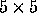

| Poker Solitaire Evaluator |
The input will contain several test cases. First line of the input is the an integer which indicate the number of test case followed by a blank line. Each consecutive test case will also separated by a blank line.
Each test case gets 25 cards, 5 cards per line. Each card consists of two characters. The first represents the rank of the card: `A', `2', `3', `4', `5', `6', `7', `8', `9', `X', `J', `Q', `K'. The second represents the suit of the card: `S', `H', `D', `C'.
The cards are dealt into a  square. Each row and column is evaluated to determine the highest hand type for which its 5 cards qualify. The hand types, from low to high, are Nothing, Pair, Two Pair, Three of a Kind, Straight, Flush, Full House, Four of a Kind, Straight Flush. A hand qualifies only once, and then only for its highest type. For example, a Four of a Kind does not count as two pair or three of a kind.
For each test case output a list of 9 integers, telling how many hands of each handtype were found. from lowest to highest, being:
Two consecutive output will separated by a blank line.
For the example below, the five rows evaluate to Straight Flush, Straight, Pair, Flush, Three of a Kind. The Five columns evaluate to Four of A Kind, Full House, Two Pair, Nothing, and Two Pair.
1 AS 2S 3S 4S 5S AC 2H 3H 5C 4C AH 2D KC KH 5D AD 3D KD 9D 8D XH 3C XC XS 8C
1, 1, 2, 1, 1, 1, 1, 1, 1